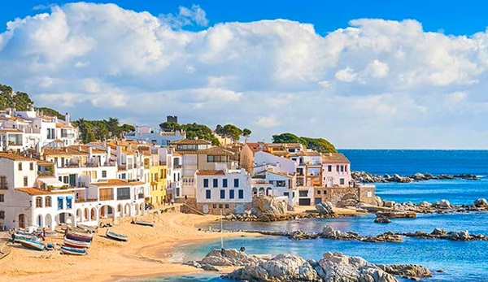

Los pueblos mas bonitos de cataliña
Los pueblos mas bonitos de cataliña

Calella de Palafrugell, es un pequeño y mágico pueblo de pescadores situado a los pies del Mediterráneo, en el Baix Empordà, provincia de Girona.
Su origen como pueblo se remonta al siglo XVIII, cuando empezaron a llegar los piratas. Fue entonces cuando los pescadores de Palafrugell decidieron instalarse en la costa para protegerlo.
La gruesa arena de sus playas favorecen la transparencia del agua, cosa que beneficia el paisaje. Calella de Palafrugell cuenta con algunas de las calas más bonitas del Mediterráneo y de la Costa Brava. Son de postal y conviene conocerlas a pie, recorriendo el Camí de Ronda, un camino histórico de costa que va de Blanes a Portbou. Desde el Jardín Botánico de Cap Roig hasta Llafranc se pueden encontrar ocho calas y playas cada una con un encanto que las hace diferentes: algunas más rocosas, otras más accesibles, pero todas ellas ideales para pasar un día ¿o... quizá todo el verano?.